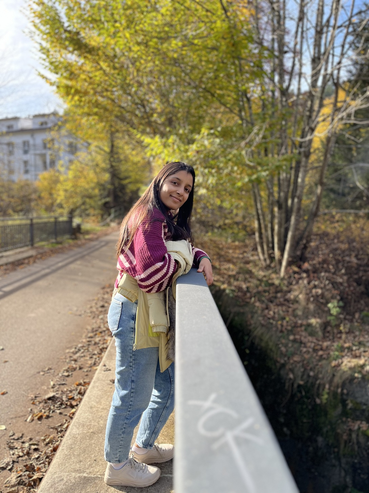
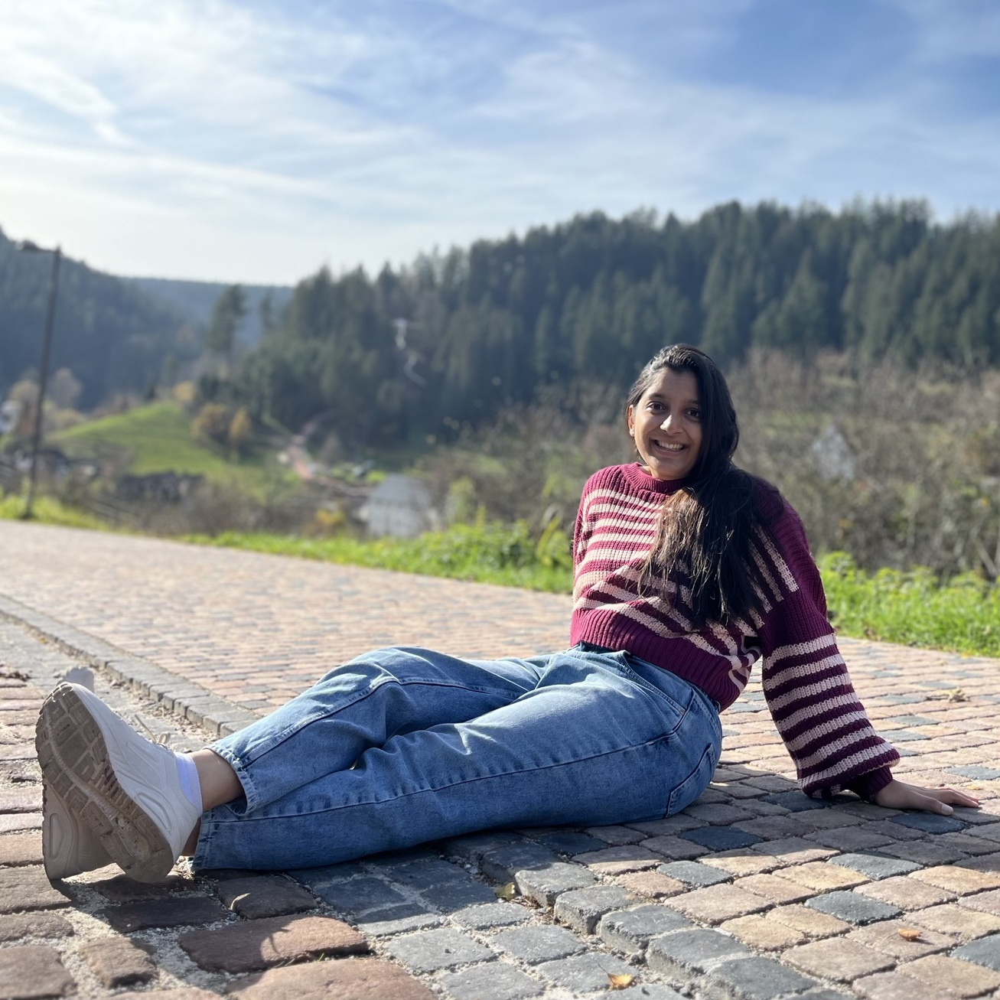

Three things you should know about me
I like problems where data has a shape: flight networks, orbits, molecules.
I scale production ML. At Lufthansa Group I re-engineered pipelines across ~300M booking records, cutting runtime by ~30% and compute cost by up to 60% on Azure ML and Databricks.
I build honest, leakage-free AI. I run feature ablations, red-teaming and EU AI Act checks so models hold up in the real world.
I connect maths to decisions. I defended a GraphSAGE demand model to Lufthansa’s network planning team and I explain results to non-technical colleagues.
Three years. One trajectory.
From keeping pipelines at 99.9% availability to shipping governed ML at airline scale.
Engineering, then data science.
Projects
Filter by industry domain, by skill, or both. A project can belong to several skills.
Beyond the job
Space, healthcare and community.

NASA Space Apps
Took part in 2025 and joining again in 2026.
Healthcare hackathon, Pristina
My team built iSpace, a shared 3D space for healthcare and education, with nurses, doctors and IT specialists.
Stargazing and painting
I chase Saturn and Venus sightings, and paint to switch off.

Ready to build high-performance data systems?
I’m interviewing for full-time Data Science, MLOps and AI Engineering roles in Germany and remote.
Send email LinkedIn GitHub